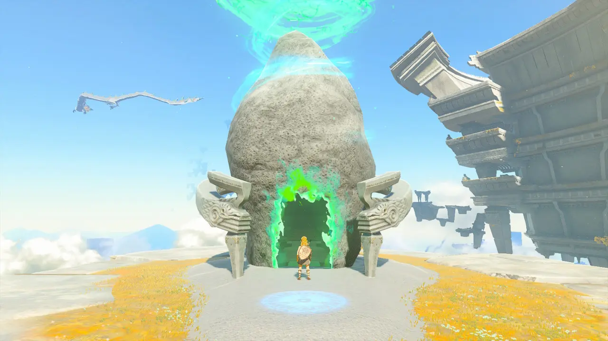

Après avoir fini le tutoriel dans l'île céleste du prélude ce qu'il faut faire c'est de
se diriger vers le château d'Hyrule.
C’est dans cette direction que tu vas tomber dans un village, qui s’appelle
le fort de guet, où il y a Pru'ha qui te donne une quête qui, au terme de la quête
va te donner la paravoile, un objet qui permet de planer (La paravoile est vraiment
un objet indispensable alors il faut vraiment faire ça au début du jeu), et la
possibilité d’utiliser les tours. Pour savoir à quoi sert les tours, regarder
dans l’onglet « la carte » à la fin de la partie « Terrestre ».
Pour l’ordre des temples le mieux c’est de commencer par le temple de l’eau ou du vent
car ils sont assez faciles ensuite le temple du feu et pour finir le temple de la foudre
car le boss est plus difficile que les autres.
Certain donjon demande d’avoir pas mal de vie car des bosses peuvent retirer facilement 5 cœurs.
Il faut prendre le temps de faire le jeu comme en prenant les sanctuaires que vous voyez et
pas directement aller dans chaque donjon. Si vous voulez des informations sur les sanctuaires aller dans l'onglet la carte et
à la fin de la carte terrestre.

Essayez de fusionner tous ce que vous pouvez avec les pouvoirs de Link.
Nintendo avait révélé de nombreuses combinaisons d’armes fusionnées dans le nouveau
jeu Zelda, mais ce n’était qu’une partie. Il est important de tester toutes les fusions
possibles pour en découvrir des nouvelles. Vous pouvez fusionner les armes entre elles,
ou avec des matériaux et des objets. Il faut que vous ayez les bons instruments de combat
lors des batailles contre vos ennemis, donc expérimentez le plus possible afin de découvrir
toutes les fusions possibles.
Notez les points d'intérêt sur la carte
La map est beaucoup plus vaste que dans Breath of the Wild. Entre la partie supérieure,
dans le ciel et les grottes, vous ne pourrez pas retenir chaque point important. Il est
donc fondamental de tous les marquer pour les retrouver quand vous le voudrez.
Ne foncez pas sans réfléchir
On ne le répétera jamais assez, arrêtez de foncer tête baissée sans connaître
les adversaires qu’il y a autour de vous. Les ennemis de Tears of the Kingdom
sont beaucoup plus batailleurs que dans Breath of the Wild, ils peuvent très vite
vous surprendre, surtout qu’ils peuvent aussi fusionner des objets et donc avoir
des armes puissantes. Alors avant de rentrer dans le combat, observez le nombre
et le placement de tous vos ennemis.